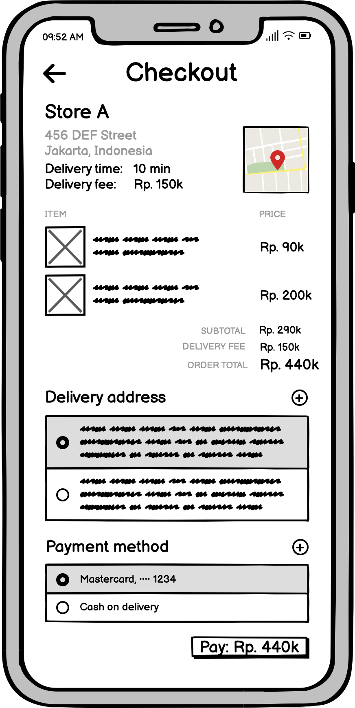

Radius App Interface:
iterative interface design
Summary: Designed app interface for Radius, a grocery-delivery start-up
Process: Worked with team to draw initial sketches brainstorming potential page layouts, then combined chosen features in a Balsamiq wireframes & created interactive Figma app mock-up. Created a second iteration implementing feedback from critique sessions and carried out user studies
Reflection: If we were to create another iteration using feedback from user studies, changes could include limiting the color palette and removing past delivered orders from home screen
Introduction
Radius is an emerging 15-minute grocery delivery service based out of Indonesia.
They capitalize on a network of hyper-local dark stores to deliver groceries quickly and affordably.
Our interface aims to make the online grocery shopping experience intuitive and easy for users.
Since Radius delivers from multiple grocery stores, our design aims to accurately present the
options that are available from each store, while also allowing users to easily access items from
other stores. Additionally, we understand that the heart of Radius is fast delivery. Driven by the
philosophy that knowledge instills confidence, we were careful to design an interface that communicates
order statuses as clearly as possible.
Our interface aims to make the online grocery shopping experience intuitive and easy for users.
Since Radius delivers from multiple grocery stores, our design aims to accurately present the
options that are available from each store, while also allowing users to easily access items from
other stores. Additionally, we understand that the heart of Radius is fast delivery. Driven by the
philosophy that knowledge instills confidence, we were careful to design an interface that communicates
order statuses as clearly as possible.
Sketches
Below you will see four different sketches of interface ideas based upon various design choices. Although they all have a similar style in regards to following a row format for displaying stores and store items, design differences primarily included on how a search bar appears (icon or search bar), app navigation layout, and home page content.

We met as a team to combine our individual sketches into one sketch which can be viewed here!
Wireframes
Below, you can see wireframes for four different screens made using Balsamiq to demonstrate how the interface of the app will look. Below are some descriptions of the design choices made for each screen
Home
Store
Checkout
Order
Home Page: The home page is intentionally made with less text and more images to make instructions clear to the user.
Store Page: The store page characterizes all of its content in row format. This is done so all of the store items are organized and efficient for a user wanting to purchase groceries.
Checkout Page: The checkout page lists all items being purchased in a column and clearly states price, delivery location, and payment information.
Order Page: The order page shows a clear timeline for users to track the status of their order.
First Prototype & Critique
During a mock-up critique session, we received valuable feedback from our fellow designers, to whom we are grateful. We've organized the feedback as such:
General
| Feedback received | Our response |
|---|---|
| Should have a tabbed navigation bar at the bottom | Tabbed navigation bars do help to organize an app with many pages. However, they could potentially be distracting to the user, especially if they are not used to it. Due to the simple nature of our prototype, we decided to maintain the simple view without a navigation bar. |
| Some of the links on the prototype do not make sense. For example, on the home page, tapping on Alfamart's order leads to IndoMart's order status page. | We agree that this could be confusing. In the revised prototype, only the specific Indomart element will be linked to IndoMart's order status page. We have also removed other confusing links across the prototype. |
| Display item count on shopping bag/cart icon. | Users would be able to tell from a quick glance how many items they have in their cart. |
Home
| Feedback received | Our response |
|---|---|
| The store location should be placed at the top (perhaps in the app header). | The store location isn't a setting that is often changed. Most users tend to buy groceries from the same place. In the revised edition, we decided to place it where it is in order to reduce clutter in the app header. We also adjusted the font size to make it less distracting. |
| The discount banner's shape and shadow make it look like a big, actionable button. Consider changing the shape or a button inside the banner. Consider also using arrows to indicate that the banner is scrollable. | We agree that the discount banner's shadow could potentially be confusing. In our revised prototype, we have removed the shadow. As for the shape of the banner, we decided to keep it as is to maintain a consistent design on the home page. We find an arrows interface to be more appropriate for a pointer device (e.g. desktop). For a mobile device, we decided to use a "page" indicator at the bottom of the carousel. We've made the dots bigger and more visible to make it more obvious that the banner carousel is scrollable. |
| The “Store in (Location)” header looks a little out of place and interferes a little with the overall grid structure. | To make the view neater, in our revised prototype, we decided to left-align all headers and move the location icon and text to a right-aligned label. |
| Feedback received | Our response |
|---|---|
| Add a phone number on the store page so customers can contact the store. | We don't feel that this change would bring about much value to the user. |
| There’s no way to add to cart when you click on specific item. | Our original philosophy was that whatever quantity is shown on the item card is the quantity already in the cart. However, on second thought, we found that this could be confusing to the user. We considered that the conceptual model of selecting the quantity an item before adding it to cart would be more familiar and thereby more intuitive to the user. We have since added the "Add to Cart" button to the item card. |
Checkout
| Feedback received | Our response |
|---|---|
| There is no option to edit cart contents in checkout page. | We totally forgot... Fixed! |
| After navigating from home page to checkout page, hitting the back button takes the user to the store page instead of back to the home page. | We've fixed this issue. Additionally, we've made the row of store information on the checkout page tappable so that the user can easily navigate back to the store page should they find the need to do so. |
| "Submit Order" button is small. | We found the button to be of an appropriate size. We also considered making it bigger, but we felt that a button that is too big could potentially result in accidental presses. |
| Tapping on items takes you back to the store page, which is confusing. | The original intention was to allow the user to navigate back to the specific item card on the store page. However, since the prototype in its current state does not allow such functionality, we have removed these links. |
Order Status
| Feedback received | Our response |
|---|---|
| Placing ongoing orders and past orders under the same row, and same section header ("Your previous orders" on the home page) can be quite confusing. | {renderAcceptStatus(true)} We concur with this feedback. We considered color-coding the buttons to indicate the status of the order, but we found this to not be the most intuitive nor the neatest solution. We have since moved the "past orders" away, to be accessed via a separate button. We have also renamed the header on the home page to "Orders in progress" to clarify the status of the listed orders. |
| Feature request: having a button to recreate orders that are common or often repeated. | {renderAcceptStatus(true)} We find this to be a great idea! In our revised prototype, we've added an "Order Again" button to the order status page. |
Revised Prototype
Below is the revised prototype based on feedback.
User Testing
We used UserTesting.com to complete three user tests, using the revised prototype above. Before beginning the tests, users were given this introduction in order to provide context: “You are in Indonesia and ordering groceries to your house. Please note this is a prototype, so there is limited functionality”. Their screen and audio was then recorded as they interacted with the prototype and responded to prompts.
Tasks
Main Task: We asked users to complete one main task: "Add two eggs from Indomart to your cart and check-out the order, using the address saved as 'home' and the saved credit card for payment". After completing the task, users were asked two multiple-choice follow-up questions:
- Did you complete the task successfully?
- Yes, I'm sure I completed the entire task successfully.
- No, I'm not sure if I completed the entire task successfully.
- No, the task took too long that I gave up.
- No, the site's information on navigation was poor.
- No, I encountered an error or a bug.
- No, I was confused by the task instructions.
- No, other (please explain out loud).
- Overall this task was:
- 1 - Very difficult
- 2
- 3
- 4
- 5 - Very easy
Task Steps: In order for a user to successfully complete this task, they had to complete the following process. This step breakdown was not provided to users.
- From the list of stores on the home page, click on Indomart.
- From the Indomart store page, click on eggs from the list of grocery items.
- Choose 2 as the quantity of cartons and click on the “Add to cart” button.
- Click on shopping bag icon to get to the check-out page.
- On the checkout page, make sure that correct address and payment information is chosen.
- Click on the "Submit Order" button.
- Done! The user can now see order and delivery details.
Results: All three users accurately believed that they succesfully completed the task and they all chose the highest ranking (5 - Very easy) for task ease. This is in line with our goal of learnability and user intuitiveness. There were no errors in the process of completing the task.
The only deviation from the outlined process was when one user tried to search for the store name “Indomart” instead of clicking on it from the home page. We do not count this as an error, as it is a valid approach for the task and would have achieved the goal if the app was fully implemented. This course of action supports our decision to implement a search bar, providing one user case scenario of how the search option could be helpful. Once the user saw that the search option functionality was not implemented as part of the prototype, they went back to the home page and chose Indomart from the list of stores, successfully continuing on the path to submitting an order.
Additional Task & Results: In addition to the main task above, we also asked users to complete a smaller separate task: "Check on the process of your most recent ongoing order” . This is achieved by clicking on the left-most order on the "Orders in progress" section of the home page. Again, all three users accurately believed that they successfull completed the task and they all chose the highest ranking (5 - Very easy) for task ease. We believe that these results are a positive reflection of the app's learnability.
Questions & Responses
We asked users a number of questions throughout the process in order to gauge their initial reactions to the app, as well as some post-test questions to get feedback. Below is a list of the prompts and a summary of user feedback.
| Prompt | Summary of User Feedback |
|---|---|
| Without leaving the homepage, what are your initial impressions of the app? Explain your answer. |
User 1
|
| Take as much time as you need to explore this app. Move on to the next task when you're ready |
User 1
|
| What, if anything, is missing on this app? |
User 1
|
| How unlikely or likely are you to shop from this app in the future? Explain your answer |
User 1
|